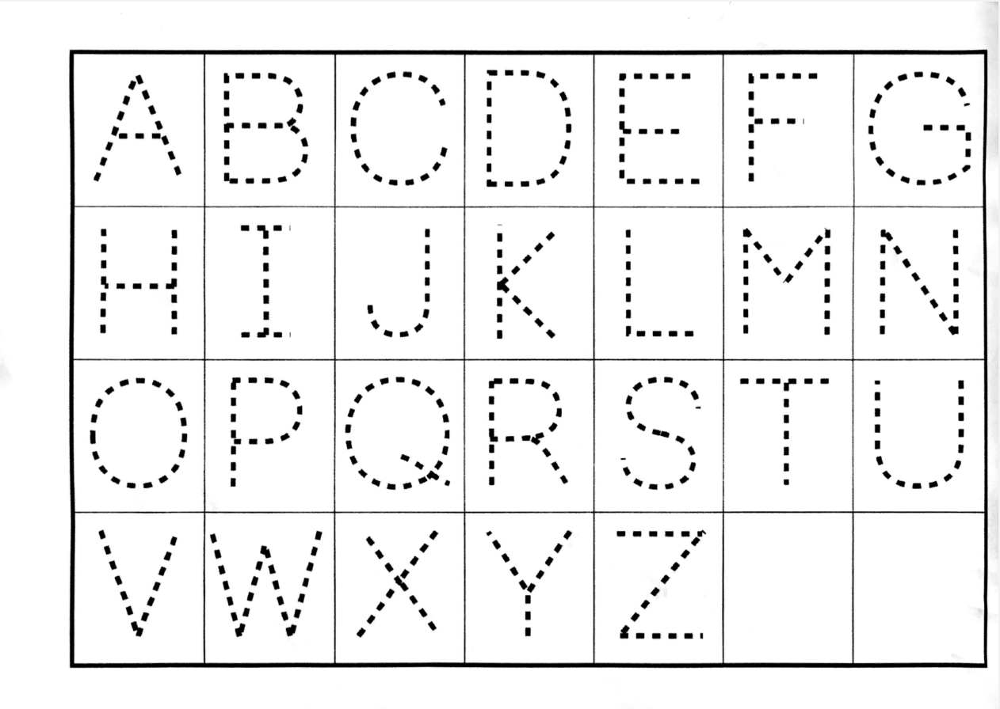
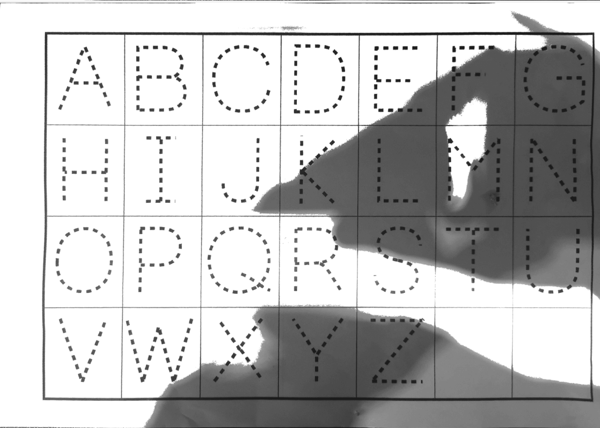
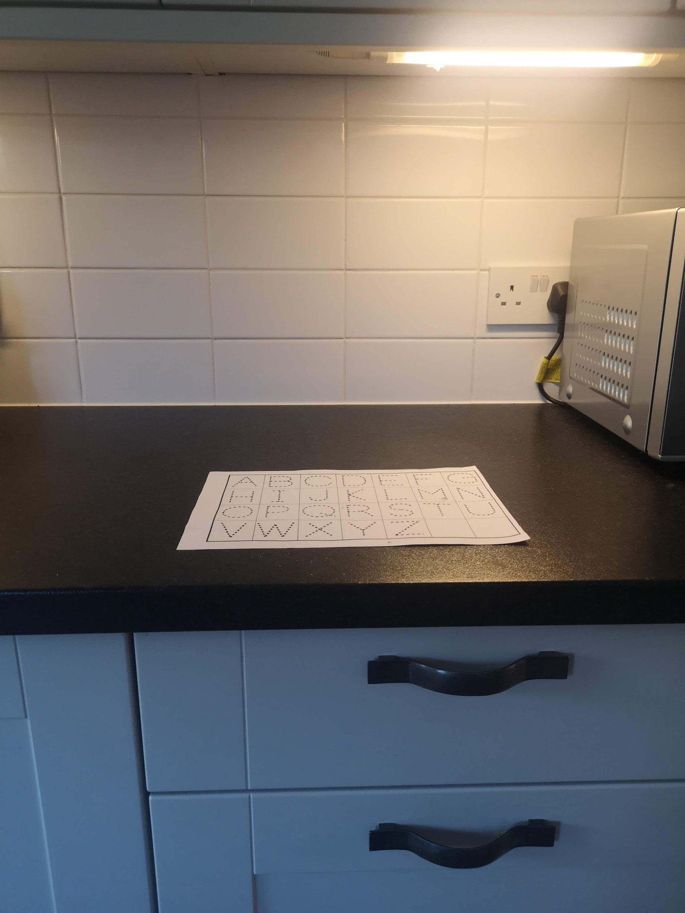

Scanning Documents for Online Tutorial and Exam Submission
You can also download a pdf version of this recommendation.
This document describes how you can use your phone or tablet to produce clear scans of your work as PDF files that are modest in size. The final section is written for Trinity Term 2020 open-book test-takers since these students may be scanning documents under a tight time constraint. If you have any comments of know of software that works better, please let me know at kevin.sheppard@economics.ox.ac.uk.
Flatbed Scanners¶
If you have access to a flatbed scanner, this will produce the highest quality scan. I recommend you use 300dpi in black and white mode when scanning documents for submission. This balances file size against the image's resolution. Grayscale and color generally produce files that are larger and that are not usually easier for assessors or tutors to read.
Phone and Tablet Scanning¶
General Instructions¶
Lighting¶
Poor lighting is the simplest method to produce a scan that is hard or impossible to read. Side lighting is key to creating a high-quality scan when using a phone or tablet. Overhead lighting is your enemy since it is likely that your body or your device will cast an unnecessary shadow. Look around your environment for locations that have a reliable source of side lighting. When scanning in the day, indirect outside light can produce an excellent source for producing high-quality scans. Direct sunlight can lead to overexposure and is not recommended. Alternatively, you might find locations with under cabinet lighting. I have good experience using these. Finally, a desk lamp can be positioned to produce side lighting where both you and your device will not case a shadow. If you do not have a good location with side lighting, you can use your device's flash. In my experience, this produces slightly worse quality scans than having a good lighting setup, but it is much better than having a shadow on your document. The image below shows a scan created with uniform lighting that originated from the side.

Th next scan was created with a strong shadow that was produced by my arm. This tricked the software into thinking that this was a color document.
This final scan was produced by Genius Scan. The device cast a strong shadow on the page which resulted in a large dark area.

Background¶
Assuming you are writing on white paper, you want to scan on a background that has high contrast. Black, dark brown, and most other dark colors produce high contrast, which lets the software function better. The next image shows my preferred scanning location in my home.

It is a dark kitchen worktop which provides great contrast. It is illuminated by under cabinet lighting, and so I cannot cast shadows with my body or my device. Note that when scanning, I turn off the other lights in the kitchen so that the under-counter lights are the strongest source of illumination.
Device Position¶
It is important that you hold your device level and that the document occupies the majority of the viewfinder when scanning. Most high-quality scanning software will encourage optimal camera positioning.
Multi-page Documents¶
Most documents you scan will consist of multiple pages. You should scan these consecutively by adding a new page to your current scan. If you make a mistake, I recommend reshooting the problematic page and then continuing to the end of the document. All of the recommended software lets you delete a page after you finish scanning.
Software Recommendations¶
iOS (iPad/iPhone)¶
There are two apps I recommend: Genius Scan (4.8 rating, 35,000 reviews) and Scanner Pro (4.9 rating 130,000 reviews). Genius Scan is free and has a paid upgrade. It works well enough in the free mode to use for exam and assignment submission. Scanner Pro has a modest price. Both of these apps have great auto edge detection when used on a high contrast background. ScannerPro is more forgiving to uneven lighting and tends to produce softer shadows if present. ScannerPro is my recommendation if the price is not an issue.
Android¶
Genius Scan (4.7 rating, 78,000 reviews) is also available for Android and is, in my experience, the most accurate scanner. CamScanner (4.8 rating, 2.5M reviews) also works well, although it is not as accurate at automatic edge detection. It does have some party trick modes that work well if you have a text that is mostly monochrome text but contains a full-color diagram. Genius Scan is my recommendation if you have a good lighting setup. If not, I would use CamScanner.
There are many other scanners, so please do try others if you are not happy with these.
Genius Scan Settings¶
-
Set Image Quality to medium before scanning your document (Menu > Settings > Image Quality > Medium). I Could not detect any relevant differences when scanning black and white documents across Medium, High, and Highest. File sizes, however, do vary with this setting, and Medium minimizes the output size of the PDF without compromising legibility.
-
Edit images before exporting. After you have scanned the document, you can tap on any page to open the edit view. Editing lets you:
-
Adjust the scanning mode to select Black & White if color incorrectly was detected;
- Rotate the images so that they have the correct orientation; and
-
Recrop any images where GeniusScan's edge detection was not adequate.
-
Change the File size when exporting. GeniusScan will estimate the size of the file after export. In my tests, Small produced files that are easy to read (about 600kB per scanned page, when used with Medium image quality). The table below shows the estimated size of the file exported using combinations of Image Quality and File size. Medium/Medium and Medium/Large appear to be the most sensible choices. Both Highest Image Quality and Actual File size should be avoided.
| Image Quality | Small | Medium | Large | Actual |
|---|---|---|---|---|
| Low | 571kB | 640kB | 811kB | 2.1MB |
| Medium | 1.2MB | 1.3MB | 1.7MB | 4.3MB |
| High | 2.1MB | 2.3MB | 2.9MB | 7.5MB |
| Highest | 3.6MB | 4.0MB | 5.1MB | 13MB |
I have included two sample files where you can compare Highest/Actual with Medium/Small. Note that the file size of the Medium/Small file is 2.5MB, not 1.2MB, as estimated by GeniusScan.
Excessively Large Scans¶
If you attempt to export and the resulting file is excessively large, you can split a scan in GeniusScan.
- Begin by selecting the document.
- Long press a page in the second half of the document.
- Select all pages in the second half.
- Select the move icon and select New document.
The animation below illustrates these steps.

You will then need to rejoin the parts into a single PDF using PDF Sam Basic or an online tool.
Excessively Large PDFs¶
If the PDF you have produced exceeds the upload limit, you can compress it using an online PDF compressor. I recommend using the most conservative compression (Less Compression) which reduced scanned file sizes by 50% in my experiments.
Additional Issues¶
I do not believe that at-home exam takers need to be overly concerned with carefully formatting their exam answers. If pressed for time, it is reasonable to refer a hand-drawn diagram or equation on another page. If you have time, your assessors will appreciate your efforts to produce an easier to read answer. If under time pressure and you have two files, combining them into a Zip file before uploading.
Embedding Images in Documents¶
When writing essays, you may need one or more diagrams or one or more equations. The best format (as in nicest for your tutor or assessor) is to embed the image into your word document. The simplest method to do this is to:
- draw your diagram;
- photograph it;
- crop it tightly on your device; and
- email it to yourself, upload to a file service (Dropbox, Google Drive, or OneDrive), or let a service like Google Photos or iCloud to automatically back up the photo. You can encourage Google photos to back up your images by opening the Google photos app. The image will then be available through your browser.
You should then be able to directly insert the equation or diagram into your document without further formatting.
Snipping Tools¶
Snipping is a simple way to copy anything you can see on your computer into a Word or Google docs document. You can snip just the content you want, and so should not need to crop the image further.
- Windows 10: The preferred option is Snip and Sketch. The snipping window can be opened using
Win+Shift+S. - Windows 7/8: These operating systems come with a program called Snipping Tool.
- macOS:
Command+Shift+4allows you to select a region to copy.
Combining PDFs¶
You may have assignments or exams that require mixed answers where some questions are standard essays, while others require more calculation. If your answer is spread between a Word document or a Google doc and a scanned PDF, you should combine these into a single PDF before submission.
There are two simple methods. The first uses a web service appropriately titled Combine PDF. You can upload two or more PDFs, use drag-and-drop to arrange their order, combine them, and then download them. This methods comes with a standard disclaimer about privacy. Combine PDF states they delete all content after an hour, but they do not have a Privacy Policy visible.
The second uses PDF Sam Basic to merge them. PDF Sam is both free to use and open source. This program has to be locally installed to use. Merging two or more PDFs can be done by:
- select merge;
- use Add to add each of your files;
- select the output pdf file; and
- click on Run.